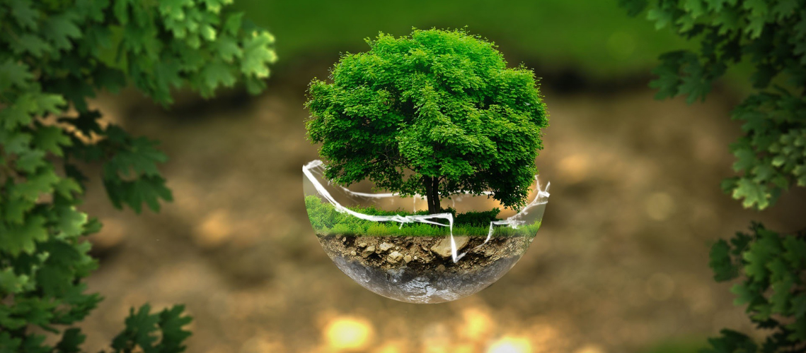
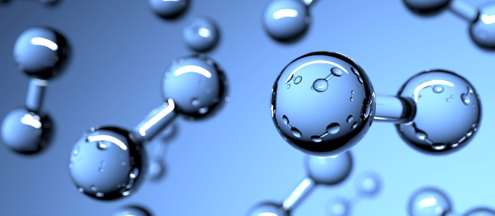
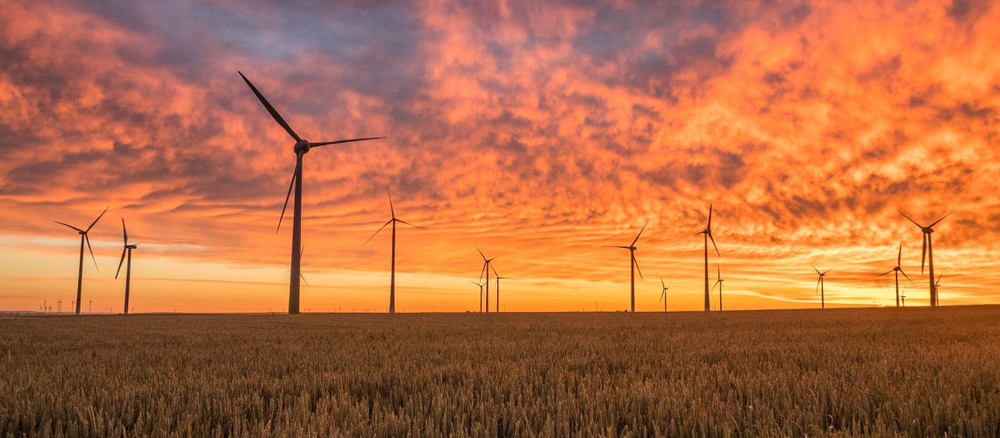
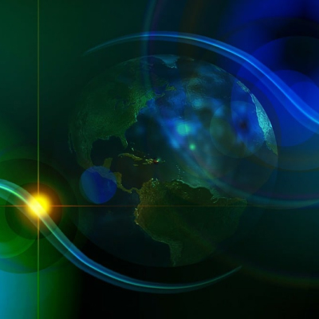
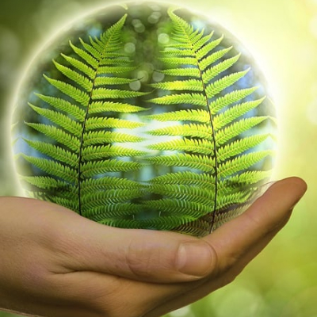
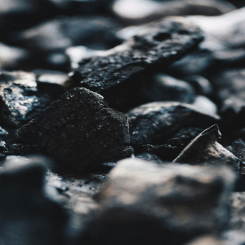

home
> 지속가능경영 > 환경경영
환경경영
지속가능한 미래를 만들기 위해 새로운 변화를 만들어갑니다.
한화의 에너지 솔루션
한화는 기후변화 대응과 환경 문제 해결을 위해 기업 경영의 모든 단계에서 환경 영향을 최소화하고자 노력하고 있습니다.
특히, 국제사회와 국가정책 차원에서 실행되고 있는 다양한 에너지 및 탄소 배출 저감 제도에 활발히 참여하고 있습니다.
-

- 친환경 에너지
- 한화는 인류가 직면하고 있는 에너지 문제에 근본적인 해결책을 제공할 무한한 친환경 에너지 자원에 주목하고 있습니다. 그 결과 세계 최고 수준의 첨단 기술력과 생산능력을 바탕으로 신재생 에너지 시장을 선도하며 세계 재생에너지 선진국에서 태양광 모듈 시장 점유율 1위를 차지하고 있습니다.아울러 차세대 태양광 기술인 페로브스카이트 기반 탠덤 셀 개발을 통해 제품 경쟁력을 지속적으로 강화하고 있습니다.
-

- 수소 에너지
- 수소는 태양광, 풍력과 같은 재생에너지를 사용해 생산 과정에서 탄소를 배출하지 않는 가장 친환경적인 에너지입니다. 한화는 수소 에너지의 생산부터 소비에 이르기까지 전 과정에 필요한 핵심 기술 개발에 주력하고 있습니다. 한화의 앞선 기술과 역량, 경험으로 완성하는 고품질 수소를 통해 탄소가 배출되지 않는 궁극의 친환경 에너지를 합리적인 가격으로 공급해 나갈 것입니다.
-

- 풍력 에너지
- 한화는 76MW급 영양 풍력발전단지, 25MW급 제주 수망 풍력발전단지, 90MW급 양양 수리 풍력발전단지 등 지금까지의 풍력발전단지 조성 (EPC) 경험을 바탕으로 풍력 에너지 사업의 개발과 운영, 투자까지 주관하며 발전 사업을 포함한 풍력 에너지의 밸류체인을 만들어 나가고 있습니다. 신안, 보령에 해상풍력발전단지 개발을 추진하는 등 해상풍력 분야에서도 친환경 그린 디벨로퍼의 역량을 발휘하고 있습니다.
환경경영 강화
한화는 변화하는 글로벌 에너지 패러다임에 적극 대응하고 지속가능한 사회에 기여하고자 합니다.

친환경 기술과 제품 개발

자원 순환경제 구축

탈석탄 금융